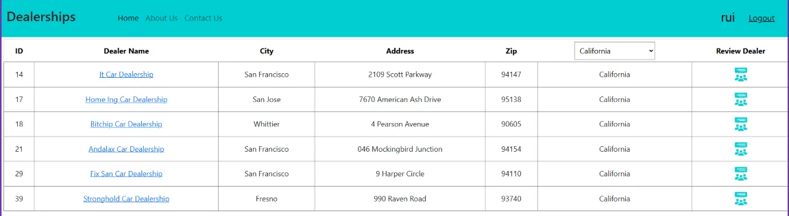
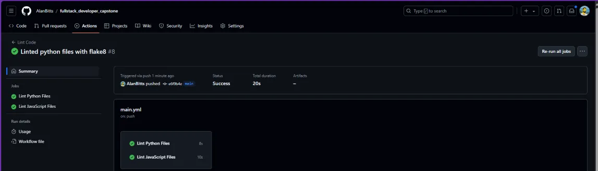

/dev
Online
Rui Viveiros
> Robotics & AI Data
I work where software, data and robotics meet. I build web apps with Python, JavaScript and containers, and I collect and prepare the real-world robot data that AI models learn from.
01
About
I'm a technologist with a foot in two worlds. I build software: web apps, APIs and containerised services with Python and JavaScript. I also work hands-on with robots, operating them and making sure the data they produce is accurate and ready for training AI models.
I got here by an unusual route. I studied communication, moved into IT support, and then trained as a full-stack developer through the Meta and IBM professional programmes. That mix means I can talk to engineers, read a stack trace, and explain technical work clearly to people who aren't technical.
I work daily on Linux with Bash, SSH, Docker and Git, with AI agents as coding partners.
- 4Web projects shipped
- 2Professional developer certificates
- 8Specialisation courses completed
- 3Robot platform types operated
02
Stack
/infra
Systems & tooling
/data
Data & AI
/robotics
Robotics
03
Projects


featured // capstone
Dealership Platform
A full-stack web app for a national car dealership network. Users sign up, browse dealers by state, and post reviews. A sentiment-analysis microservice scores each review.
- Django back end with an admin panel and user registration
- REST endpoints for dealership and vehicle inventory data
- Flask microservice for review sentiment analysis
- Containerised with Docker, deployed on Kubernetes, linted in CI
web app
Blog Platform
A CRUD blog built on Node.js, Express and MongoDB, with server-side rendering, clean routing and an MVC structure.
front end
↗
Photography Gallery
A web gallery of photos I've taken over the years, built with Tailwind CSS and light JavaScript animation.
this site
↗
Personal Portfolio
The site you're on: hand-written HTML, CSS and vanilla JavaScript with no build step, hosted on GitHub Pages.
/education
- IBM Full-Stack Developer Professional Certificate
- Meta Front-End Developer Professional Certificate
- IT Technician Professional Certificate
- BA, Communication, Culture & Organisations, Universidade da Madeira
- Django applications with SQL and databases
- Back-end apps with Node.js and Express
- AI applications with Python and Flask
- Microservices and serverless
- Containers: Docker, Kubernetes & OpenShift
- Python for data science, AI and development
- Front-end apps with React
- Generative AI for software development
04
Open a channel
Building a web app, working with AI data, or bringing robots into the field? I'd like to hear about it.